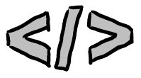
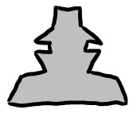
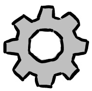
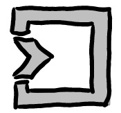

Обзор
В данной статье будут рассмотрены базовые вещи касательно Web Components.
- Способы создания элементов веб-страницы на основе Web Components.
- Четыре спецификации Web Components.
- Фундаментальные аспекты компонентов.
Что из себя представляют Web Components
Рецепт Web Components прост - это три фундаментальных блока: HTML, CSS и JavaScript.
HTML определяет каркас компонента, является разметкой как и для обычной страницы. CSS отвечает за визуальное отображение. JavaScript - это логика компонента, его поведение и функциональность. Спецификации Web Components позволяют нам использовать эти три технологии вместе для построения собственных компонентов. Отсутствие дополнительных требований и инструментов существенно упрощают создание и использование таких компонентов как отдельно, так и внутри уже существующих приложений.
Компоненты, создаваемые на основе принципов Web Components, на сегодняшний день, имеют максимальную модульность, гибкость и переиспользуемость. Независимость от иного контента на странице дает возможность не беспокоиться о неправильном отображении.
А наследование и переиспользование уже существующих компонентов делают их универсальным инструментом для приложений любых масштабов. Но, пожалуй, основным достоинством Web Components остается их простота - разработчикам нет необходимости изучать дополнительные фреймворки и библиотеки, все, что нужно - это HTML, CSS и JavaScript.
Таким образом достигаются следующие цели:
- изоляция стилей;
- отсутствие зависимостей в виде библиотек и фреймворков;
- универсальность и простота компонентов.
Спецификации Web Components
Web Components состоит из четырех спецификаций:
- Custom Elements
- Shadow DOM
- HTML Templates
- HTML Imports
Custom Elements
 Custom Elements описывает как создавать собственные DOM элементы, добавлять свойства и функции к ним, а также расширять их на основе уже существующих элементов. Для создания пользовательского DOM элемента необходимо использовать классы ES2015. Рассмотрим создание пользовательского элемента на простом примере.
Был создан класс расширяющий нативный HTMLElement. Таким образом мы унаследовали функции самого базового DOM элемента. Внутри класса определен конструктор, который будет вызван при создании элемента. В конструкторе обязательно необходимо вызвать метод super() чтобы выполнился конструктор базового класса. Наконец, вызываем метод window.customElements.define, определенный в спецификации Custom Elements v1. На вход он принимает название тега, который в дальнейшем будет использован на странице и, собственно, класс для создания элемента. Теперь мы можем в теле документа вставить наш элемент, после чего в консоли выведется сообщение из метода конструктора.
Помимо конструктора в Custom Elements присутствует ряд методов, предоставляемых API и описанных в спецификации, как методы жизненного цикла (lifecycle hooks). Они используются для выполнения определенных участков кода в отдельные периоды “жизни” компонента.
Рассмотрим три наиболее употребимых из них. Для этого изменим предыдущий пример следующим образом:
- connectedCallback выполняется в момент добавления элемента к DOM;
- attributeChangedCallback метод выполняемый в момент изменения атрибутов. Он позволяет подписываться на изменения определенных атрибутов. Для того, чтобы можно было указать какие именно из них отслеживать статический метод observedAttributes должен вернуть их в виде массива текстовых значений.
- disconnectedCallback выполняется в момент удаления элемента из DOM. Данный метод наиболее удобен, если необходимо выполнить некоторую работу (удалить интервалы, очистить дополнительные данные) после удаления.
Расширение Custom Elements - это возможность создавать свои элементы, основываясь на уже созданных ранее. Для понимания рассмотрим пример.
После выполнения в консоли будут выведено:
Hello!
How are you!
Расширение Custom Elements на основе стандартных элементов - еще одна очень важная функция при создании своих элементов. Если необходимо добавить небольшой функционал к стандартному DOM элементу это можно сделать через его расширение. Предположим, что у нас есть input, в котором при его создании должно появиться подготовленное заранее содержимое.
В результате, после создания в нашем элементе input будет содержаться текст Hello. Для расширения стандартного элемента мы выполнили следующие шаги:
- Унаследовались от расширяемого элемента extends HTMLInputElement.
- При создании элемента добавили тег расширяемого элемента window.customElements.define('helloinput-custom-element', HelloInputCustomElement, {extends: 'input'});
- В документе наш элемент используется через указание атрибута is в стандартном теге:
-
Важно! На данный момент расширение стандартных элементов не реализовано в большинстве браузеров, поэтому необходимо воспользоваться
поллифилом выше мы подключили его
через cdn:
.
Итак, мы рассмотрели, пожалуй, основную из спецификаций Web Components. Custom Elements является ядром компонента, именно с неё начинается его создание.
Shadow DOM
Следующая из спецификаций Web Components называется Shadow DOM. Она позволяет создавать дополнительное DOM дерево для создаваемого элемента. Особенность такого внутреннего DOM дерева заключается в его инкапсуляции - независимости от основного DOM дерева.
Существует два способа использования Shadow DOM - в закрытом и открытом виде:
- “open” - открытый тип, позволяет получить полный контроль над дополнительным DOM-ом;
- “close” - закрытый тип, не позволяет манипулировать дополнительным DOM-ом после его создания.
Рассмотрим пример кода:
В результате его исполнения браузер отобразит три input элемента, два из них с красной рамкой и один без нее:
Такой результат получился в результате использования функции attachShadow и добавления дополнительного содержимого через shadowRoot.innerHTML. Если посмотреть в инспектор кода, то можно увидеть структуру дерева дополнительного DOM.
Дополнительное содержимое было добавлено в shadow-root. Это позволяет компонентам не влиять на общие стили страницы и не испытывать их влияние на себе.
HTML Templates
 HTML Templates позволяет создавать шаблоны
на основе HTML. Такие шаблоны обладают рядом особенностей:
- Создаются с помощью тега .
- Не отображаются в браузере до момента их явного использования.
- Могут быть использованы для определения разметки компонента и её дальнейшего рендеринга во время создания.
Для использования шаблона достаточно создать разметку внутри тега template:
В примере выше у нас есть список задач и шаблон для отображения отдельной задачи. С помощью функции document.importNode мы создаем клон шаблона (глубокое клонирование при помощи второго параметра со значением true). Далее измененный шаблон добавляется к элементу списка задач функцией appendChild. Как видно из примера, шаблон был переиспользован несколько раз внутри цикла.
HTML Templates является наиболее устоявшейся из спецификаций, она реализована во всех современных браузерах.
HTML Imports
 Последней из спецификаций Web Components является HTML Imports. Как и следует из её названия она описывает способ импорта html файла. Это можно сравнить с импортом css файла внутри страницы. Только в данном случае вместо разметки стилей будет загружен файл с одним или более компонентами.
Для демонстрации создадим два файла. Первый hello.html с содержимым:
Второй index.html:
Открытие страницы index выведет заголовок из файла hello.html.
HTML Imports является наиболее спорной из всех спецификаций, на сегодняшний день она реализована только в браузере Chrome и Opera. К тому же, смысл работы данной спецификации выглядит несколько избыточным с появлением динамических импортов в ES2015. Тем не менее, функция загрузки компонентов через импорт html файла существует и может оказаться весьма нужной в отдельных случаях.
Итог
На этом мы закончили рассмотрение основ Web Components. Познакомились с целями, которые позволяют достичь компоненты и как эти цели коррелируют с четырьмя спецификациями:
- Custom Elements - создание элемента внутри страницы со своим жизненным циклом, разметкой и логикой отображения.
- Shadow DOM - дополнительный DOM внутри страницы, позволяющий добиться инкапсуляции стилей.
- HTML Templates - шаблон для переиспользуемых частей внутри компонентов.
- HTML Imports - импорт html файлов внутри основной страницы.
Ссылки
- webcomponentsjs и polyfills - полифиллы и как их использовать (для работы еще нереализованных спецификаций в браузерах).
- Custom Elements.
- Shadow DOM.
- HTML Templates.
- HTML Imports.